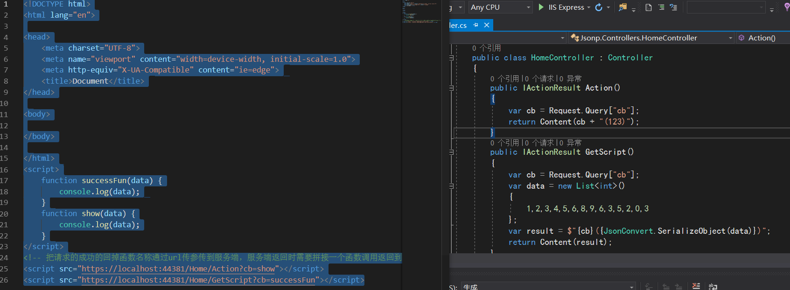
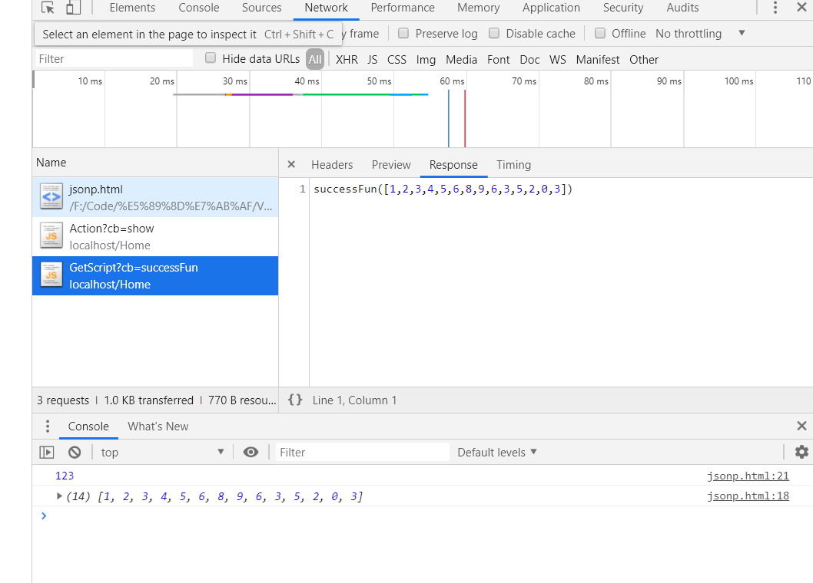

jsonp的本质是通过script标签的src属性请求到服务端，拿到到服务端返回的数据 ，因为src是可以跨域的。前端通过src发送跨域请求时在请求的url带上回调函数，服务端收到请求时，接受前端传过来的回掉函数名称，将其拼接成js函数调用返回到前端即可完成跨域请求。
前端实现代码：
<!DOCTYPE html>
<html lang="en">
<head>
<meta charset="UTF-8">
<meta name="viewport" content="width=device-width, initial-scale=1.0">
<meta http-equiv="X-UA-Compatible" content="ie=edge">
<title>Document</title>
</head>
<body>
</body>
</html>
<script>
function successFun(data) {
console.log(data);
}
function show(data) {
console.log(data);
}
</script>
<!-- 把请求的成功的回掉函数名称通过url传参传到服务端，服务端返回时需要拼接一个函数调用返回到前端 -->
<script src="https://localhost:44381/Home/Action?cb=show"></script>
<script src="https://localhost:44381/Home/GetScript?cb=successFun"></script>
.Net服务端代码：
using System.Collections.Generic;
using Microsoft.AspNetCore.Mvc;
using Newtonsoft.Json;
namespace Jsonp.Controllers
{
public class HomeController : Controller
{
public IActionResult Action()
{
var cb = Request.Query["cb"];
return Content(cb + "(123)");
}
public IActionResult GetScript()
{
var cb = Request.Query["cb"];
var data = new List<int>()
{
1,2,3,4,5,6,8,9,6,3,5,2,0,3
};
var result = $"{cb}({JsonConvert.SerializeObject(data)})";
return Content(result);
}
}
}

